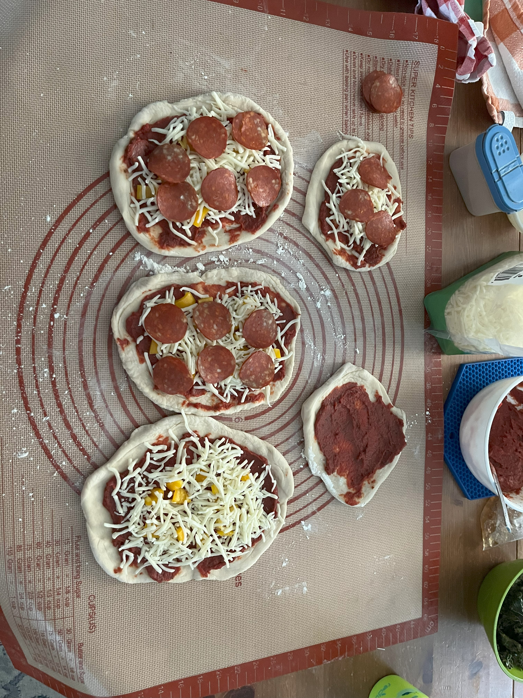

Recipes
Dough
1 cup (237 ml) warm water
1 tsp (5 ml) salt
1 tbl (15 ml) olive olive
3 cups (710 ml) bread flour
2 tsp (10 ml) active dry yeast
Bread Machine
Combine ingredients in order. Set machine to Dough cylce, about 90 minutes.
By Hand
Mix yeast with warm water (100° F, 38° C) and set aside until foamy. Combine flour, salt, and oil. Pour water/yeast over top and mix until dough starts to form. Turn dough onto lightly floured surface and knead until firm and stretchy (about 10 minutes). Cover and set aside for about 2 hours.
Sauce
6 oz tomato paste
¼ tsp salt
1 tsp oregano
1 tsp thyme
¼ tsp garlic powder
2 Tbs olive oil
1 tsp white wine vinegar
Combine ingredients in a bowl. Source: Scratch to Basics
Baking
Oven
If using a baking stone, place in oven and preheat to 475° F (245° C). If using a baking sheet, just preheat the oven. Stretch pizza to desired size (if using all the dough, it makes about a 16in pizza). Top pizza with desired toppings. Do not overload with toppings as this will cause the dough to underbake. Bake from about 15 to 25 minutes depending on your oven and if you're using a stone.
Wood-Fired Oven
Heat oven to 750° F (400° C). Stretch pizza to desired size (if using all the dough, it makes about a 16in pizza). Slide pizza into oven using a peel and/or metal spatula. Turn pizza about every 10 seconds to ensure even cooking. Depending on your oven, cooking can take about 60 seconds. Do not overload with toppings as this will cause the dough to underbake.
Blog
Welcome to my recipe blog!
As you may have noticed, I've decided to buck the usual recipe blog tradition and start with recipes first and blog second. That way you don't have to scroll through all my nonsense to get to what you really want.
For Christmas a few years ago, my wife got me an Ooni Wood-Fired Pizza Oven. I love pizza and this was a wonderful gift. The learning curve was a bit steep at first, making pizzas that were simultaneously burnt and raw inside, but I eventually got the hang of it.

To make the dough, I use our bread maker. It’s less messy and does a great job of kneading and rising the dough.
Once it's done, I separate the dough out into smaller pieces to make individual sized pizzas using a dough knife.
To flatten to dough, I take the ball and turn it like a steering wheel, slowly expanding it into a circle (though they often end up more like ovals). I stop when I can see light through the middle. Having a thin middle crust helps it cook more evenly.
It's important when adding toppings, not to overload the pizzas otherwise the dough won't bake thoroughly in the middle, and you'll end up with burnt and raw pizza.
Some important tools to have when cooking pizzas in the Ooni oven are a peel to move the pizzas in and out (along with a metal spatula to help turn them) and a laser temperature sensor. This is especially helpful in knowing when to put the pizzas into the oven. Too low, and they don't cook right (don't worry about getting it too hot - high temps are good).
The Ooni uses wood pellets (I have a gas attachment but have not used it yet). To start, fill the basket part way and use a fire starter to get them burning.
Once it's burning, keep the basket filled to the top with pellets otherwise the temperature can drop quickly inside.
You'll know when the fire is really going when you see what I call “Pope smoke,” that is, a light white smoke coming out of the chimney.
Check the temperature. It's important the stone inside be about 750° F (400° C). The flames should fill the back of the oven. Put your pizza in the oven and turn it about every 10 to 15 seconds so it cooks evenly. You only need about 60 seconds to cook it through.
The final step is to enjoy your creation!

Eventually, I plan to experiment with dessert pizza (which may require parbaking) and other non-pizza dishes.